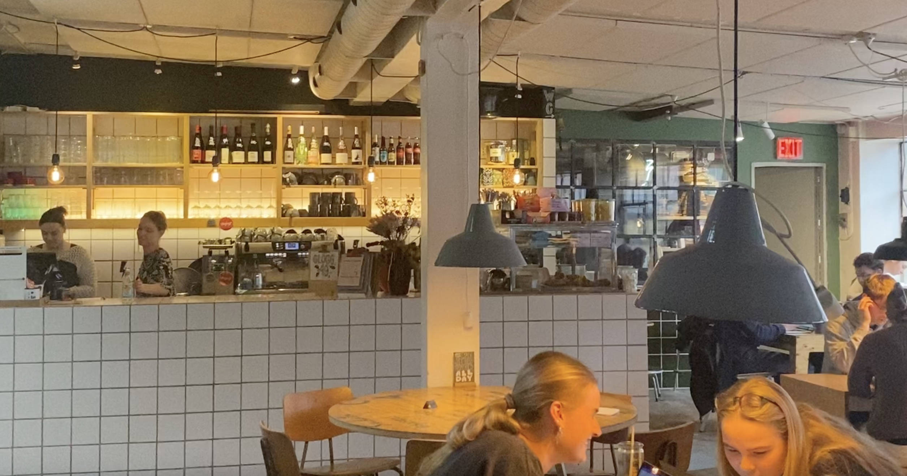
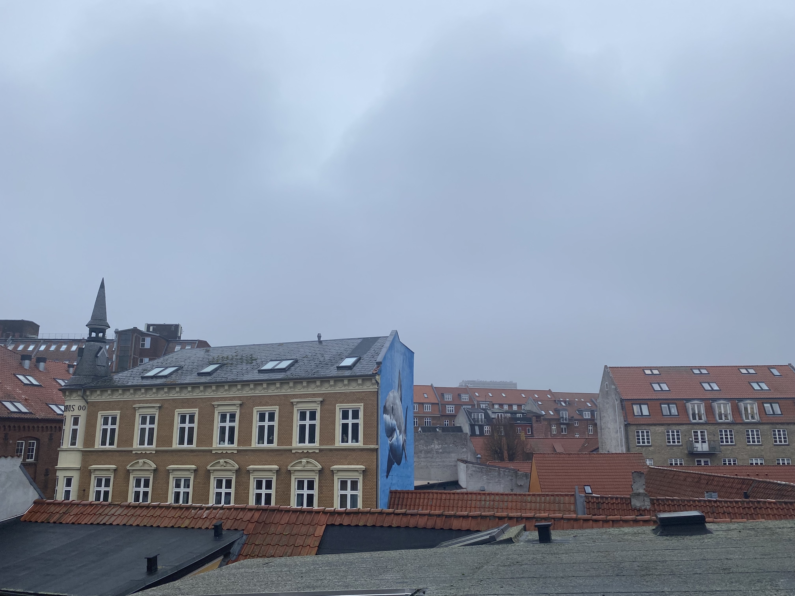
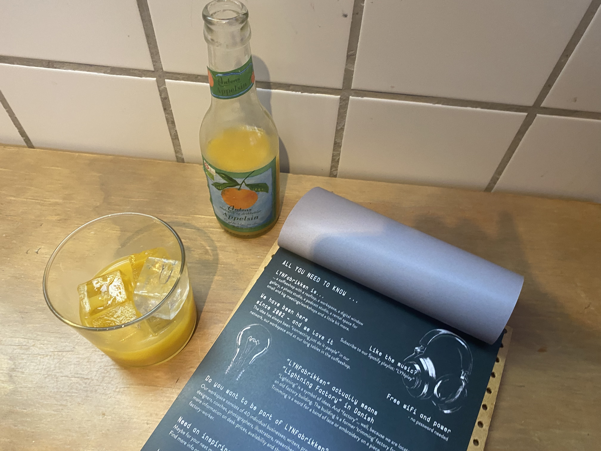
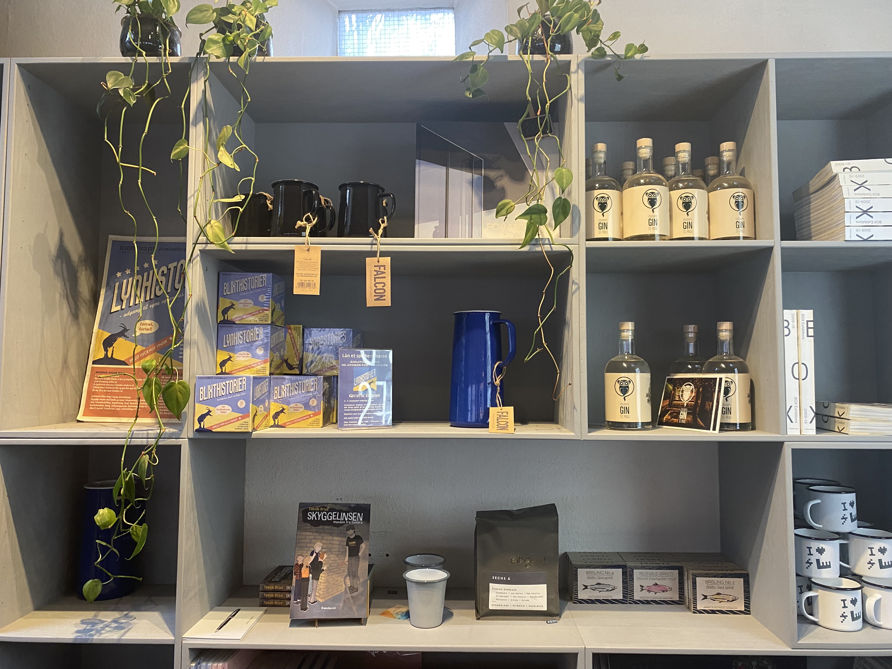
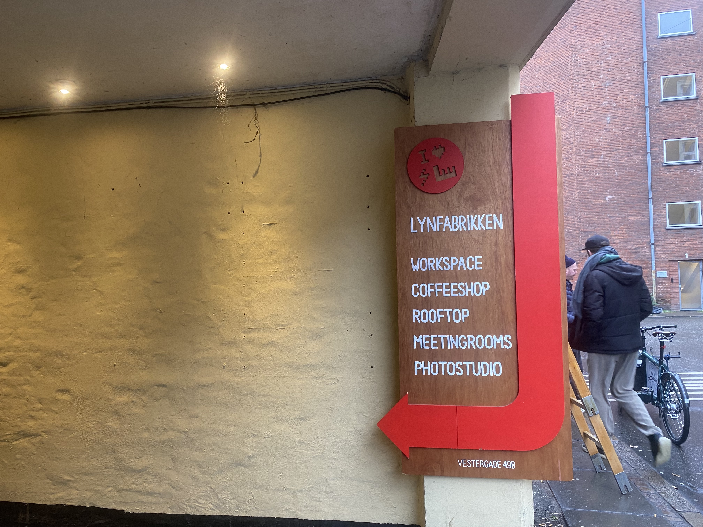
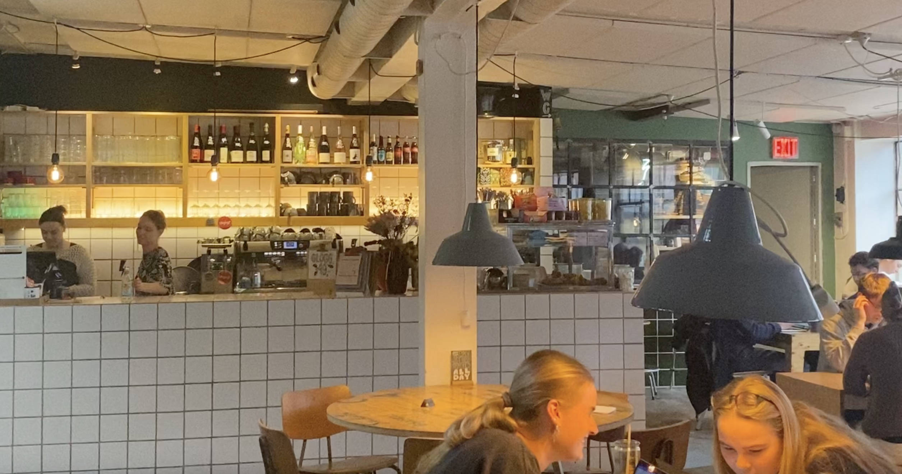
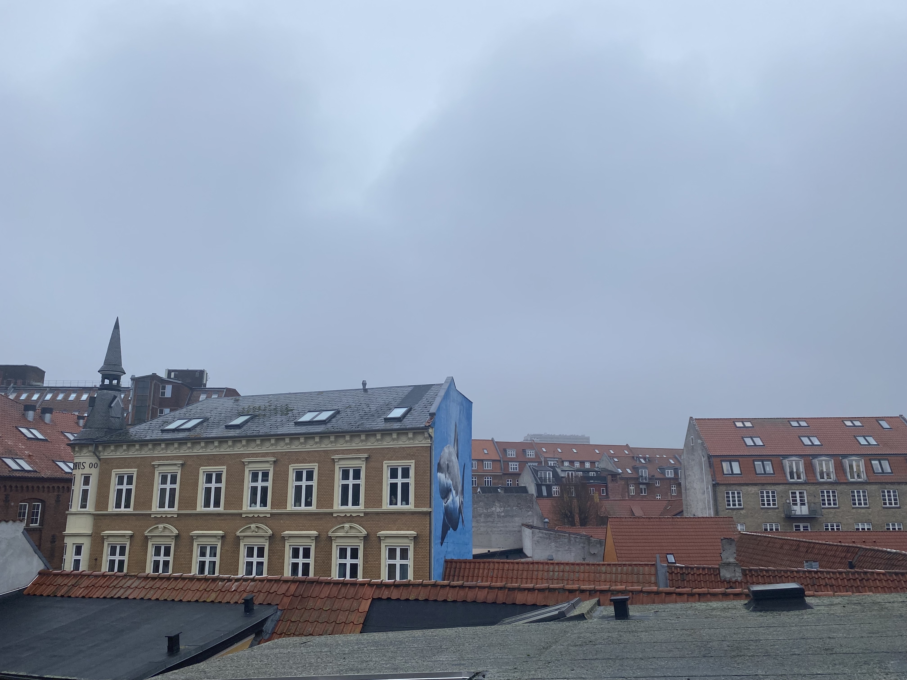
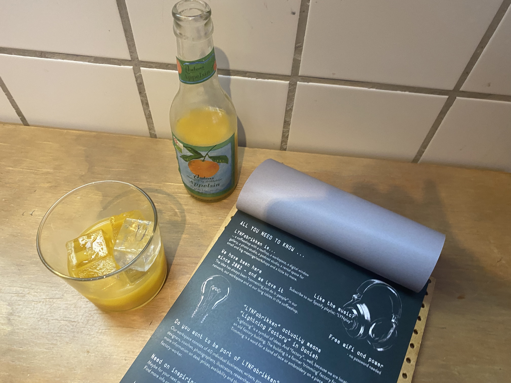
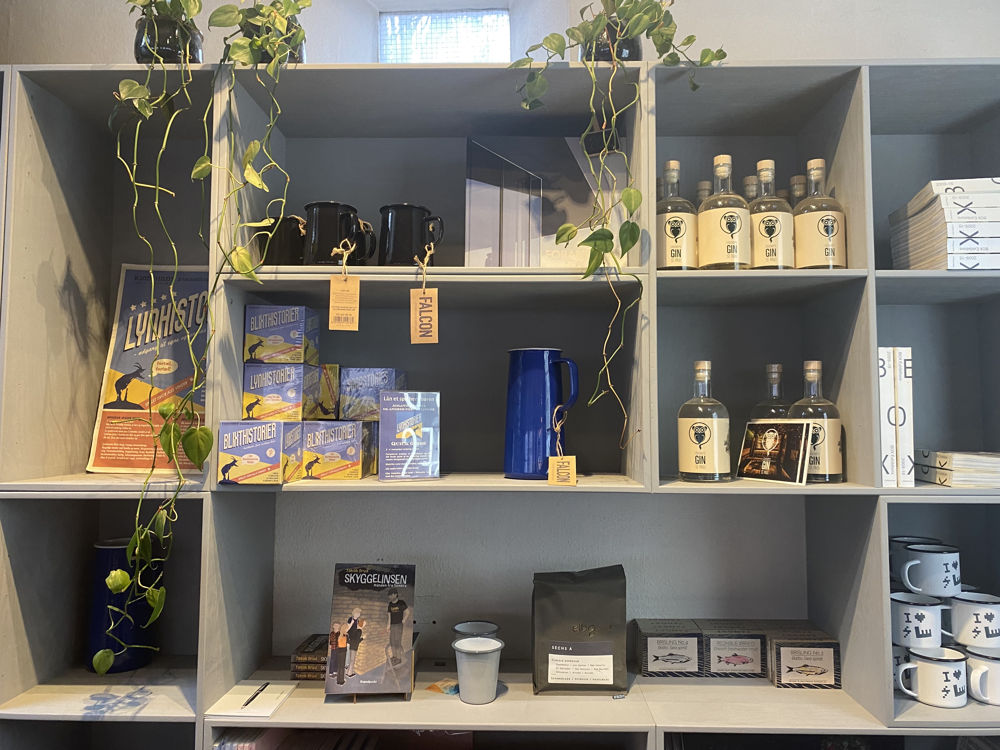
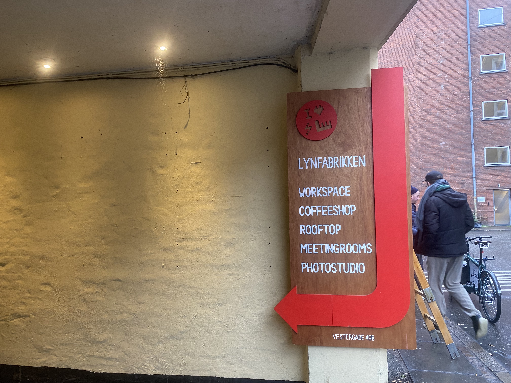

About
LYNfabrikken is cozy working space located in a former factory building. This student friendly place offers tranquil atmosphere for working with free WiFi and delicious drinks from their coffee bar. It’s a perfect spot for people with a weak point for design since there’s also a design store including FREITAG items.
If you feel like grabbing some fresh air, there is no need to leave the building. Just check out their rooftop with breathtaking panorama of Aarhus including best view on Aros.
Good to know
LYNfabrikken offers many meeting rooms and even podcast studio to book. Before your visit at this hidden gem make sure you visit their website and make a reservation for a table at a cafe since it’s not a big place and all the seats may be occupied.
If you come to LYN and warm to the background music, you can listen to it wherever you want. Just check out their Spotify playlist.
How to get there
The most convenient way is to get off at Klostertorvet bus stop and take a 4-minute walk.
Check the bus lines that go to the Klostertorvet bus stop:
1A, 2A, 3A, 4A, 11, 13, 16, 17, 18, 22, 23, 43, 44, 45, 46, 100, 200
 








